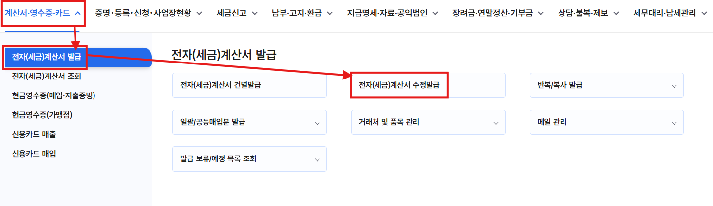
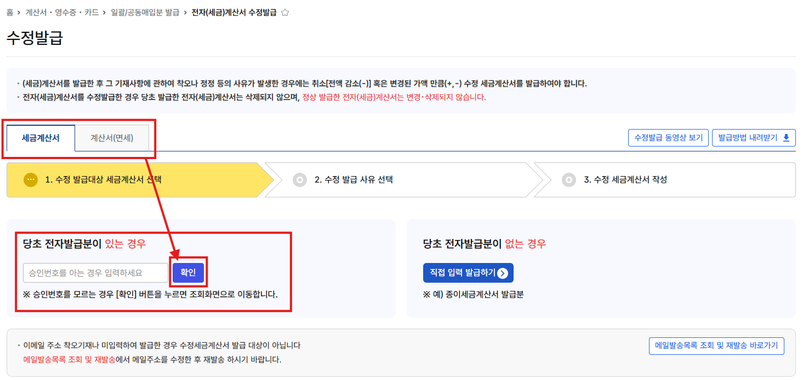
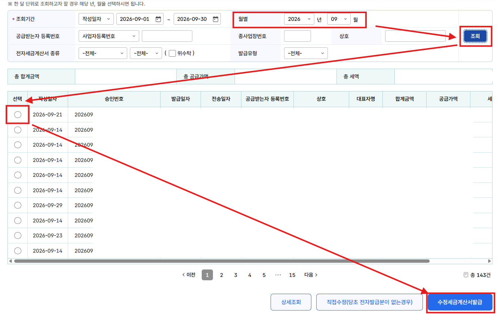
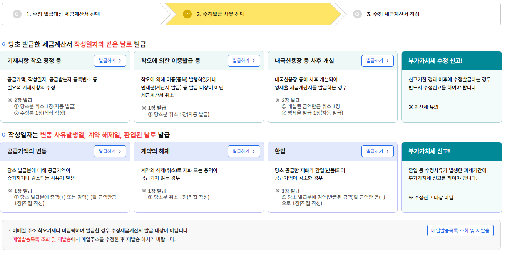
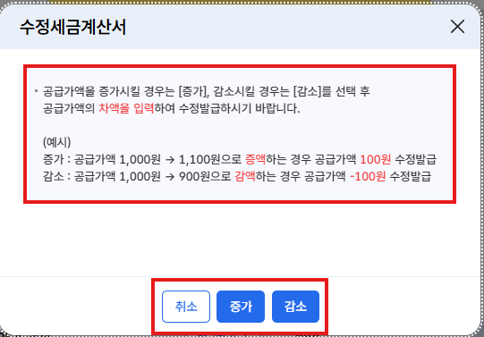
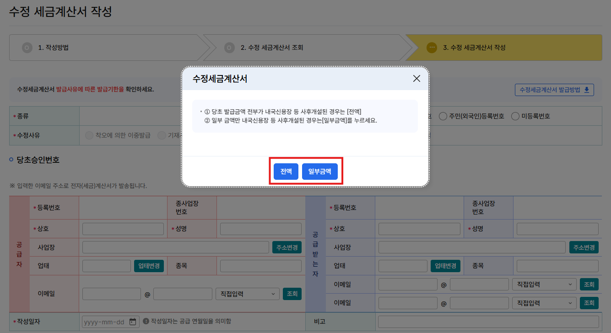

이미 발급한 세금계산서에 틀린 내용이 있거나 거래 금액이 바뀌었을 때, 어떤 사유를 골라 어떤 날짜로 다시 발급하는지 한 장에 정리했어요.
수정세금계산서는 처음 발급한 것을 지우는 게 아니라, 취소하는 음수(−, 마이너스) 세금계산서와 필요하면 올바른 세금계산서를 추가로 발급하는 방식이에요.
예: 1,550,000원짜리 거래를 1,250,000원으로 잘못 발급했다면
아래 상황 중 내 경우를 찾고, 오른쪽의 홈택스 수정사유를 기억해 두세요. 3단계에서 이 이름의 버튼을 누르시면 돼요.
| 이런 상황이에요 | 홈택스 수정사유 |
|---|---|
| 당초 날짜처음 발급한 작성일자 그대로 고쳐요 | |
| 금액, 작성일자(공급한 날짜), 공급받는 자 사업자등록번호를 잘못 적었어요 | 기재사항 착오 정정 등 |
| 세율을 잘못 적었어요 (예: 영세율인데 10%로 발급) | 기재사항 착오 정정 등 |
| 같은 거래를 실수로 두 번 발급했어요 면세 거래인데 세금계산서를 발급했어요 카드로 결제받은 거래인데 세금계산서도 발급했어요 | 착오에 의한 이중발급 등 |
| 수출용으로 공급했는데, 나중에 내국신용장(수출용 물품 거래를 보증하는 증서)이나 구매확인서가 나왔어요 | 내국신용장 등 사후 개설 |
| 새 날짜일이 생긴 날을 작성일자로 새로 발급해요 | |
| 거래 후 할인해 주거나 단가가 바뀌어 금액이 늘거나 줄었어요 | 공급가액의 변동 |
| 계약이 아예 취소되어 물건·서비스를 공급하지 않게 됐어요 | 계약의 해제 |
| 공급한 물건이 반품됐어요 | 환입 |
| 상황 | 이렇게 하세요 |
|---|---|
| 이메일 주소를 잘못 넣었거나 빠뜨렸어요 | 홈택스 메일발송목록 조회 및 재발송에서 주소를 고쳐 다시 보내세요 |
| 거래처 상호나 대표자 이름만 바뀌었어요 | 필요적 기재사항(꼭 적어야 하는 항목)이 아니라 고치지 않아도 돼요 (아래 Q1 참고) |
| 처음 계약보다 수량을 더 공급했어요 | 새로운 거래예요. 추가분은 새 세금계산서로 따로 발급하세요 |
| 세금계산서를 발급한 뒤, 대금을 카드로 받았어요 | 수정하지 않아요. 세금계산서는 그대로 두세요. 다만 매출이 중복으로 잡히지 않도록 꼭 세무대리인에게 공유해 주세요. |
홈택스 > 계산서·영수증·카드 > 전자(세금)계산서 발급 > 전자(세금)계산서 수정발급

먼저 위쪽 탭에서 세금계산서인지 계산서(면세)인지 고르세요.

조회 화면에서는 월별로 해당 연·월을 고르고 조회 → 고칠 건의 선택 동그라미 → 아래 수정세금계산서발급을 누르세요.

01번 표에서 찾은 사유 칸의 발급하기를 누르세요. 위 줄 3개는 당초 날짜, 아래 줄 3개는 새 날짜로 발급하는 사유예요.



가장 헷갈리는 건 작성일자예요. 사유에 따라 처음 날짜로 고치는지, 새 날짜로 발급하는지가 갈려요.
| 수정사유 | 작성일자 | 발급하는 것 | 발급기한 | 지난 신고 고치기 |
|---|---|---|---|---|
| 당초 날짜처음 발급한 작성일자 그대로 고쳐요 | ||||
| 기재사항 착오 정정 등 | 처음 작성일자 | 2장: 취소분 −(자동) + 올바른 것(직접 작성) | 착오: 기한 없음 (인식한 달의 다음 달 10일까지 권장) 착오 외: 확정신고기한 다음 날부터 1년 이내 (아래 표 참고) | 신고기한이 지난 뒤라면 수정신고 필요 |
| 착오에 의한 이중발급 등 | 처음 작성일자 | 1장: 취소분 −(자동) | 안 날 바로 | |
| 내국신용장 등 사후 개설 | 처음 작성일자 (비고란에 개설일) | 2장: 취소분 − + 영세율분(자동) | 개설일 다음 달 10일까지 (과세기간 끝난 뒤 25일 이내 개설 시 그 25일까지) | |
| 새 날짜일이 생긴 날을 작성일자로 새로 발급해요 | ||||
| 공급가액의 변동 | 금액이 바뀐 날 | 1장: 늘어난 만큼 + 또는 줄어든 만큼 −(직접 작성) | 바뀐 날 다음 달 10일까지 | 해당 없음 일이 생긴 기간의 신고에 넣어요 |
| 계약의 해제 | 계약 해제일 | 1장: 전액 − | 해제일 다음 달 10일까지 | |
| 환입 | 반품된 날 | 1장: 반품 금액만 −(직접 작성) | 반품된 날 다음 달 10일까지 | |
※ 계속 이어지는 거래(예: 매달 공급하는 계약)를 앞으로 중단하는 계약의 해지는 계약의 해제가 아니라 공급가액의 변동으로 처리해요.
홈택스에서는 둘 다 같은 기재사항 착오 정정 등 버튼으로 발급해요. 하지만 언제까지 고칠 수 있는지가 달라서, 내 경우가 어느 쪽인지 먼저 알아야 해요.
세금계산서에 반드시 적어야 하는 항목이에요. 이 항목이 잘못됐을 때 고치는 게 '기재사항 착오 정정'이에요.
공급받는 자의 상호·대표자 성명, 주소, 업태·종목, 품목은 필요적 기재사항이 아니에요. 고칠 의무는 없고, 거래처가 원하면 같은 사유로 다시 발급할 수 있어요.
| 구분 | 착오 | 착오 외 |
|---|---|---|
| 한마디로 | 손이 미끄러진 실수 | 사실을 잘못 알고 적은 경우 |
| 판단 기준 | 세금계산서를 계약서·견적서·입금내역과 나란히 놓고 보면 잘못 적은 게 바로 드러나요 | 적을 때는 맞다고 생각했는데, 나중에 실제 거래 내용과 달랐다는 걸 알게 된 경우예요 |
| 예시 | · 1,550,000원을 1,250,000원으로 입력 · 9월 3일 거래를 8월 30일로 입력 · 영세율인데 10% 세율로 발급 | · 공급받는 자 사업자등록번호를 잘못 적은 경우 (국세청 자료 예시) |
| 언제까지 | 별도의 발급기한이 법에 정해져 있지 않아요. 다만 가산세 불이익을 피하려면 착오를 인식한 날이 속하는 달의 다음 달 10일까지 발급하는 게 좋아요 | 공급한 날이 속한 과세기간의 확정신고기한 다음 날부터 1년 이내 예: 1~6월 거래 → 확정신고기한 7월 25일 → 다음 해 7월 25일까지 |
| 기한이 지나면 | — | 수정발급을 할 수 없어요. 잘못된 세금계산서가 그대로 남아 가산세나 매입세액 불공제로 이어질 수 있어요 |
아래 연락을 받은 뒤에는 착오든 착오 외든 기재사항 착오 정정으로 수정발급할 수 없어요. 받으셨다면 먼저 세무대리인에게 알려주세요.
※ 어느 쪽인지 애매하면 기한이 달라지니 발급 전에 꼭 물어보세요. 근거: 부가가치세법 제32조 제1항, 같은 법 시행령 제70조 제1항 제5호·제6호
아니요. 상호와 대표자 이름은 필요적 기재사항이 아니라서 수정발급 대상이 아니에요.
다만 거래처가 바뀐 이름으로 다시 받고 싶다고 하면, 기재사항 착오 정정 등으로 발급하면서 새로 작성하는 세금계산서에 바뀐 상호·대표자를 적으면 돼요.
아니요. 처음부터 금액을 잘못 적은 건 기재사항 착오 정정 등으로 고쳐야 해요. 처음 건이 −로 자동 취소되고, 올바른 금액으로 새로 작성하면 돼요.
이미 공급가액의 변동으로 차액을 발급했다면, 그 차액 건은 착오에 의한 이중발급 등으로 취소하세요.
둘 중 한 건을 골라 착오에 의한 이중발급 등으로 수정발급하세요. 처음 날짜로 − 1장이 자동으로 만들어져요.
계약의 해제는 거래처와 합의해 계약을 취소한 경우에만 쓰는 사유라서 이 경우엔 맞지 않아요.
카드 매출전표를 발급한 거래는 세금계산서 발급 대상이 아니에요. 발급한 세금계산서를 착오에 의한 이중발급 등으로 취소하세요.
반대로 세금계산서를 먼저 발급하고 대금만 카드로 받은 경우는 수정하지 않아도 돼요.
공급가액의 변동 → 감소를 누르고, 작성일자를 할인해 준 날로 해서 깎아준 금액만큼 −로 발급하세요.
예를 들어 5월 거래를 7월에 할인해 줬다면, 5월분은 원래대로 두고 할인 금액은 7월이 속한 기간의 부가세 신고에 반영돼요. 지난 신고를 고칠 필요는 없어요.
아니요. 환입을 고르고 작성일자는 반품된 날로 하세요. 반품된 금액만큼만 −로 발급해요.
원래 거래 날짜로 잘못 발급했다면, 그 건은 작성일자 오류이니 기재사항 착오 정정 등으로 다시 고쳐야 해요.
아니요. 추가로 공급한 건 새로운 거래예요. 추가분만 새 세금계산서로 따로 발급하세요.
공급가액의 변동은 이미 공급한 거래의 금액이 할인·정산 등으로 바뀐 경우에 써요.
사유에 따라 달라요.
어느 쪽이든 발급한 즉시 담당 세무대리인에게 알려주세요.